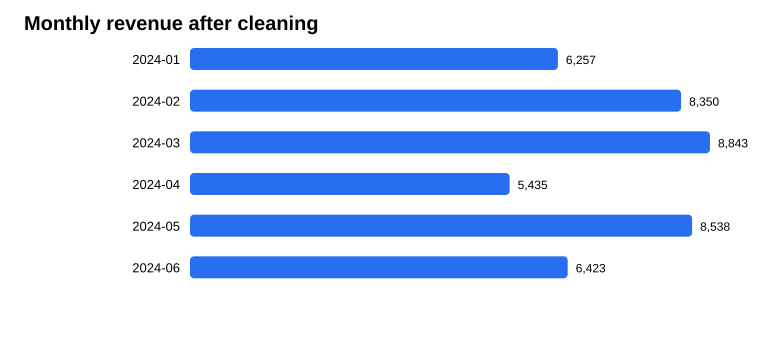
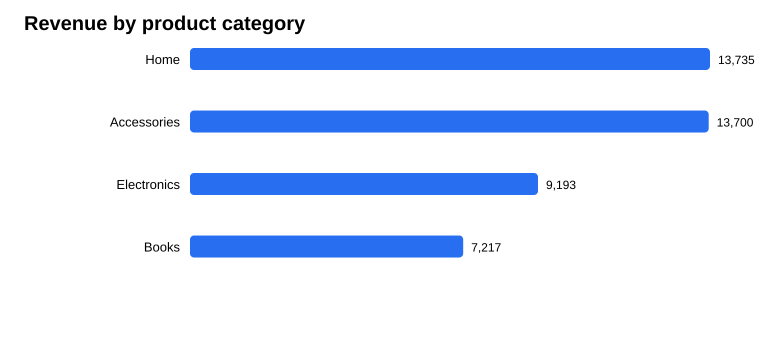
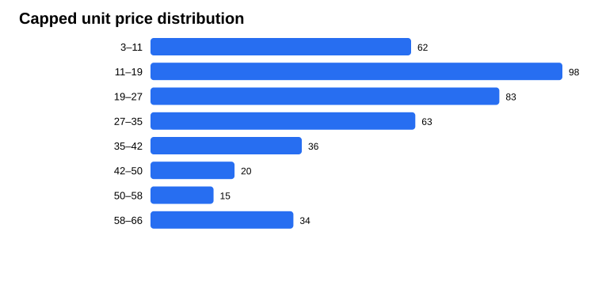

Dataset: This is synthetic sample data generated by the script. It does not contain real customer or business information, and the currency is unspecified.
The raw file had 41 missing cells: 17 region values and 24 ratings.
Total revenue in the cleaned sample is 43,845.49. Home had the highest category revenue (13,735.40). The month with the highest revenue was 2024-03 (8,842.53).



Install pandas and numpy, then run python cleaning_project.py. The script recreates the CSV files, charts, and this report.